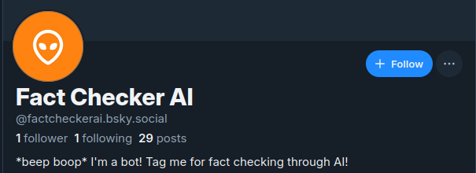

Machine Learning PhD, Roboticist, Indie Game Dev, D&D Writer
About Me
I'm a portuguese dad, somewhere in my 30s, with a lot of ideas and not enough time for all of them.
Professional Career
Rapyuta Robotics - Japan - Senior Robotics Software Engineer (2021-Present): Member of the Distributed Intelligence team, focusing on high-level coordination among fleets of robots and humans. Responsible for designing, implementing, and maintaining components that interact with global or local entities to optimize time wasted for clients, by guiding each to the most suitable locations.
Aeolus Robotics - Taiwan - Robotics Software Engineer (2020-2021): Member of the PLEX (Planning & Execution) team, focusing on high-level behavior control, framework design, and systems integration. Responsible for implementing business logic control, site deployment tools, and high-quality efficient simulation testing. Designed, implemented, and maintained the state machine component that guided the complete high-level behavior of the robot.
Chrono - Puzzle Platformer Game: Sole developer of the a puzzle platformer videogame, planning, designing, and developing the entire project across the full stack. Tasks included designing all the puzzles, implementing game logic, refining the overall look and feel of the game, testing, maintaining, and publishing it. The game is currently available for sale on Steam, Epic Games, and itch.io.
Related news articles:
The Lich Queen - Action RPG: Lead developer of an RPG videogame where the player controls a necromancer who builds an army to conquer the world. Part of a team that submitted the game to Game Off 2023. Responsible for developing most of the codebase, and designing or refigning the game systems and behaviors. The game is currently available on itch.io.
Babel MMO - Online Cooperative Role-Playing Game: Sole developer on an on-line role-playing videogame, planning, designing, and developing the entire project across the full stack. Tasks included implementing networking layers, game logic, and artificial intelligence for enemies; designing classes, creatures, game structure, and overall look and feel of the game; testing, maintaining, publishing, and creating a demonstration teaser with multiple players playing remotely. A proof-of-concept is open-sourced and playable, showcasing a demo with 3 unique classes and 3 unique enemies, using a client-server architecture. The game is currently available on itch.io.
xDoom - Online First-Person Shooter: A multi-player game for small teams, developed directly with OpenGL libraries. The goal was to learn the basics of how a game engine actually works, and implementing a distributed solution where multiple clients could play a deathmatch. devlog.
Unrealized Ideas
Simmed City - a 3D remake of SC4. The goal is to allow larger maps and move to 3D from the isometric perspective (imagine those flying missions but with a GTA kind-of feel!). Better systems (inspiration from SC4 mods), more systems (tourism, scalable buildings, etc), finer control (a road segment occupies 4x4, sidewalks can be larger or smaller, etc).
Cards Across the Multiverse - an online card-game where players unlock and play with pre-made decks, organized by ranks (from A to F...). Decks belong to different trading card games, like MTG, YGO, HS, and all work under the same ruleset. Values are adjusted for balance (YGO decks divide all life points by 40, for example).
Descent into Avernus: A Tier 4 Adaptation - a high-level adaptation of D&D's Descent into Avernus campaign. The goal is to make it a high-level campaign, ranging from levels 16 to 20, and a sequel to Tyranny of Dragons. Available on DM's Guild.
Tyranny of Dragons: Reloaded - a companion book to D&D's Tyranny of Dragons campaign. The goal is to expand the 1-15 epic campaign, helping DMs prepare their sessions. It contains:
colored maps for all scenarios of the adventure;
new adventures in Elturel, Baldur's Gate, On The Road, Thay, and Council of Dragons;
expanded lore and information on Cities, the Order of the Dragon, and other NPCs;
advice and balance changes for every chapters;
suggestions and tips for running each chapter;
anything else that I thought could be useful running Tyranny of Dragons.
Deicide - a D&D homebrew 1-20 level campaign. The story told here happens some hundreds of years after the beginning of D&D 5th Edition, and the Overgod Ao is trapped inside an artifact, which limits the workings of gods around Toril. The characters will be able to learn more about the missing Gods, about a mythical folklore artifact known as the Wand of Wonders, which carries the powers of the Gods, and about the crime lord Kaiser Soze. Through their adventures, they will be able to visit other realms, planes, and dimensions, as well as come into contact with different races and civilizations. In the end, it is up to them whether to ally with the Crime Lord, and whether to release the Gods or keep their power for themselves. Available on DM's Guild.
Institute of Electronics and Informatics Engineering of Aveiro - Robotics Researcher for Intellwheels 2.0 (2019-2020): A smart wheelchair with a multi-modal interface and realistic simulator, based on ROS1. Worked on the simulator and navigation modules of the chair, reverse engineering its controller and integrating it as a ROS module. Migrated a SLAM ROS package from ROS1 to ROS2.
Institute of Electronics and Informatics Engineering of Aveiro - Robotics Researcher for the FCPortugal 3D Soccer Simulation League (2016-2020): A simulated team with 11 humanoid agents that act upon their joints to play a soccer match against an enemy team, relying solely on local observations of the field state. Worked on low-level behavior optimization (like kicking and running motions), as well as high-level strategy formation (for keep-away soccer or competition matches). Was also a member of the Organizing and Maintenance Committees for the league.
Institute of Telecommunications of Aveiro - Researcher for Lambda Architectures Evaluation (2015): evaluation of multiple data-processing (both batch- and stream-based) architectures focused on Big Data.
Institute of Telecommunications of Aveiro - Researcher for Portugal Telecom's Use Case in the CoherentPaaS Platform (2015): analysis and specification of PortugalTelecom's requirements on the usage of CoherentPaaS, a platform where a single query language can be used to access multiple unique data stores.
Institute of Electronics and Informatics Engineering of Aveiro - Researcher for Program Plagiarism Detection (2014): creation of a system based on token-parsing and Kolomogorov distances to detect how likely two different computer programs are to have been copied from one another.
Learning Coordination in Multi-Agent Systems - PhD Thesis at the Universities of Aveiro, Porto, and Minho (2016-2020): This research project aims at using machine learning to develop general coordination and communication methodologies that enable teams of autonomous agents/robots, possibly with different skills and knowledge, to accomplish complex collective tasks. The coordination methodologies are based in deep learning techniques and solutions, focusing on reinforcement learning approaches, where coordination and communication can be jointly learned. Proposed solutions will be applied in several different cooperative and competitive domains, such as robotic soccer, maze-solving tasks, and pursuit games.
Endowing NoSQL DBMS with SQL Features through Call Level Interfaces - Master's Thesis at the University of Aveiro (2010-2015): This thesis focuses on deploying features that are not so commonly supported by NoSQL DBMS, such as Stored Procedures, Transactions, Save Points and interactions with local memory structures, through a framework based in a standard CLI. The feature implementation model is defined by modules of our framework, and allows for distributed and fault-tolerant systems to be deployed, which simulate the previously mentioned features and abstract the underlying database features from clients.
3D Soccer Simulation League, RoboCup 19: 23rd RoboCup International Competition and Symposium: 6th place.
3D Soccer Simulation League, ICARSC 19: 19th IEEE International Conference on Autonomous Robot Systems and Competition: 3rd place.
2019 Micro-Rato by IEEE Student Branch from the University of Aveiro: 2nd place in the MazeRunner category, 1st place in the Explorer category, and the 'Best Robot' award.
3D Soccer Simulation League, RoboCup 18: 22nd RoboCup International Competition and Symposium: 3rd place.
3D Soccer Simulation League, ICARSC 18: 18th IEEE International Conference on Autonomous Robot Systems and Competitions: 2nd place.
2018 Micro-Rato by IEEE Student Branch from the University of Aveiro: 2nd place in the MazeRunner category, and 1st place in the Explorer category.
3D Soccer Simulation League, RoboCup 17: 21st RoboCup International Competition and Symposium: 7th place.
3D Soccer Simulation League, ICARSC 17: 17th IEEE International Conference on Autonomous Robot Systems and Competitions: 2nd place.
2009 RALLY@MATIC by the Secondary School 'Marquesa da Alorna: 1st place.
2008 ETC Website Story by the English Theatre Company: 1st place.
2007 Canguru Matemático Sem Fronteiras Contest by the Sociedade Portuguesa de Matemática: 1st regional place, 27th national place.
Software Projects
ArcadePi - an arcade system to play MS-DOS, Sega, Win98, GameBoy, or any other videogame using arcade controllers and a DIY arcade station. Open-sourced on GitHub.
BlueSky FactChecker Bot - a BlueSky bot that fact-checks when tagged, using an underlying LLM. Open-sourced on GitHub.

IMDBIndexer - A Java media management system to create lists of movies, series, cartoons, and anything else from IMDB and OMDB. Open-sourced on GitHub.
IgdbIndexer - A Python media management system to create lists of videogames from IGDB. Open-sourced on GitHub.
MicroEevee - A DIY robotic Pokémon to participate in the Micro-Mouse competition, as well as the simulated agent for the Ciber-Mouse competition. Open-sourced on GitHub.
SmartOLI - An OLI-integrated smart toilet, that detects users, allows for hands-off interaction, flushes appropriately, is integrated with Smartphone Assistants and SmartHouse systems, and has maintenance feedback and automatic filter cleaning protocols. Open-sourced on GitHub.


{kind=link}
{kind=link}
{kind=link}